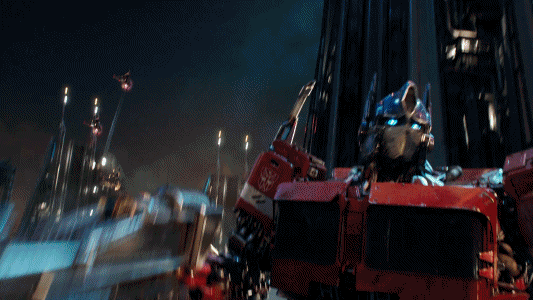
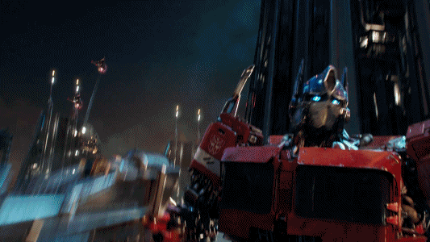

Developers: High Moon Studios, Mercenary Technology
Platforms: Microsoft Windows, PlayStation 3, Xbox 360, PlayStation 4, Xbox One
Transformers: Fall of Cybertron is a third-person shooter video game based on the Transformers franchise, developed by High Moon Studios and published by Activision.
HD CHARACTERS
Transformers: Fall of Cybertron is a direct continuation of Transformers: War for Cybertron. Giant robotic life forms known as Transformers are at civil war. Two factions, the Autobots and the Decepticons, vie for control of their home world, Cybertron.[5][7] The events of the previous game have left the planet unable to sustain life, and the Autobots, desperate to ensure the continued existence of the Transformer race, seek to flee the planet. The Decepticons, still bent on domination, will stop at nothing to ensure that the Autobots either submit to the Decepticons or are eliminated. Fall of Cybertron depicts the final battle between the two robot factions, which results in the desolation of their home world, forcing the Autobots to seek refuge in our galaxy, the Milky Way.[8][9] The developer, High Moon Studios, hoped to show a darker tone than the original game. Game Informer's Matt Miller stated that the game "changes and improves upon so many of the fundamental ideas that the developer considers the game a natural successor rather than a true sequel."[7]
n the final days of the war for Cybertron, the Autobots attempt to flee their dying homeworld aboard the Ark, but their spacecraft comes under attack by Decepticon forces. While Optimus Prime engages Megatron on the outer surface of the Ark, Bumblebee is sent by Ratchet to find and help the former. Making his way past the battle aboard the Ark, Bumblebee finds Optimus just as Megatron is about to deliver a finishing blow, which Bumblebee takes instead.
The survival mode Escalation from War for Cybertron returns. In this mode players must defend against increasingly difficult waves of enemies. As gameplay progresses, new sections of the level open, which give players access to upgraded weapons and abilities. Franchise characters are used in Escalation, while players can customize one of four character classes (Scientist, Infiltrator, Destroyer, and Titan) on 9 different maps (Sewers, Spire, Abandoned, Bowels, Array, Corrosion, Tempest, Convoy, Desolation) in competitive multiplayer.[6] Autobot and Decepticon Transformers can be customized with parts earned through a ranking system or purchased through the game's marketplace. Several parts from famous Transformers can be used, such as heads, torsos, legs, and arms. Hundreds of pieces and color options are available.[6] Players can also buy and upgrade their gear.[5]
Every character has been given their own unique ability. For example, Jazz can fire a grappling hook to reach high or distant places,[3] Optimus Prime can command the massive Metroplex, and the Combaticons have the ability to combine into the Decepticon Bruticus. Segments in which players control Bruticus are designed to accommodate its larger size. Scale is maintained so the character towers over enemies.[4] The Autobot Grimlock, who transforms into a dinosaur, is controlled differently than other characters. Carrying only a sword and shield, Grimlock cannot transform at will, instead accumulating rage as he battles opponents. When he gains enough rage, Grimlock is able to transform and inflict massive damage.[4] The online cooperative campaign play featured in the first game has been removed in favor of levels that utilize each character's specific abilities.[5]

 
